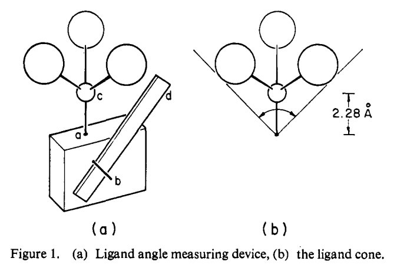
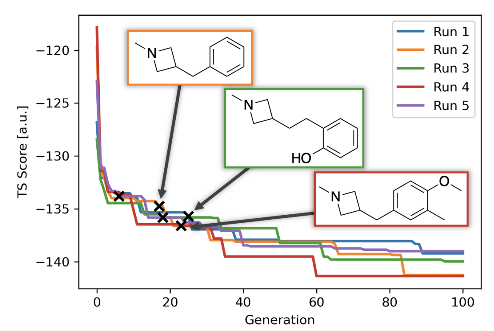

Recently, I’ve been working to assign the relative configuration of some tricky diastereomers, which has led me to do a bit of a deep dive into the world of computational NMR prediction. Having spent the last week or so researching the current state-of-the-art in simulating experimental 1H NMR spectra, I’m excited to share some of my findings.
My main resource in this quest has been a new NMR benchmarking paper, published on March 7th by authors from Merck (and a few other places). Why this paper in particular? Although there have been many NMR benchmarks, not all of these papers are as useful as they seem. Broadly speaking, there are two ways to benchmark NMR shifts: (1) against high-level computed results or (2) against experimental NMR shifts.
The first strategy seems to be popular with theoretical chemists: NMR shifts at a very high level of theory are presumably very accurate, and so if we can just reproduce those values with a cheap method, we will have solved the NMR prediction problem. Of course, effects due to solvation and vibrational motion will be ignored, but these effects can always be corrected for later. In contrast, the second strategy is more useful for experimental chemists: if the calculation is going to be compared to experimental NMR spectra in CDCl3 solution, the match with experiment is much more important than the gas-phase accuracy of the functional employed.
Not only are these two approaches different in theory, they yield vastly different results in practice, as is nicely illustrated by the case of the double-hybrid functional DSD-PBEP86. DSD-PBEP86 was first reported in 2018 by Frank Neese and coworkers, who found it to be much superior to regular DFT methods or MP2-type wavefunction methods at reproducing CCSD(T) reference data.1A subsequent benchmark by Kaupp and coworkers looked at a much larger set of compounds and confirmed that DSD-PBEP86 was indeed superior at reproducing CCSD(T) data, with a mean absolute error (MAE) for 1H of 0.06 ppm. In contrast, de Oliveira and coworkers found that DSD-PBEP86 and related double-hybrid methods were much worse at predicting experimental 1H NMR shifts, with a MAE of 0.20 ppm, making them no better than conventional DFT approaches.
The difference between these two mindsets is nicely demonstrated by Kaupp’s paper, which dismisses de Oliveira’s work as suffering from “methodological inadequacies” and states:
[Benchmarking] can be done by comparing approximative calculations to experimental data or to data computed using high-level ab initio methodologies. The latter helps to eliminate a number of factors that often complicate the direct comparison against experiment, such as environmental, ro-vibrational, or thermal contributions (possibly also relativistic effects, see below).
While Kaupp is correct that using gas-phase CCSD(T) data does eliminate “environmental” effects (e.g. from solvent), it’s not clear that these effects always ought to be eliminated! Although directly optimizing a computational method to reproduce a bunch of ill-defined environmental effects is perhaps inelegant, it’s certainly pragmatic.
The authors of the 2023 benchmark create a new set of well-behaved reference compounds that avoid troublesome heavy-atom effects (poorly handled by most conventional calculations) or low-lying conformational equilibria, and re-acquire experimental spectra (in chloroform) for every compound in the set. They then score a wide variety of computational methods against this dataset: functionals, basis sets, implicit solvent methods, and more.
In the end, Cramer’s WP04 functional is found to be best, which is perhaps unsurprising given that it was specifically optimized for the prediction of 1H shifts in chloroform.2 The WP04/6-311++G(2d,p)/PCM(chloroform) level of theory is optima, giving an MAE of 0.08 ppm against experiment, but WP04/jul-CC-PVDZ/PCM(chloroform) is cheaper and not much worse. B3LYP-D3/6-31G(d) works fine for geometry optimization, as do wB97X-D/6-31G(d) and M06-2X/6-31G(d).
Based on these results, my final workflow for predicting experimental proton spectra is:
Optimize each conformer using B3LYP-D3BJ/6-31G(d).
Remove duplicate conformers with cctk.ConformationalEnsemble.eliminate_redundant().
Predict NMR shifts for each conformer using WP04/6-311++G(2d,p)/PCM(chloroform).
Combine conformer predictions through Boltzmann weighting, and apply a linear correction.
For small molecules, this workflow runs extremely quickly (just a few hours from start to finish), and has produced good-quality results that solved the problem I was trying to solve.
Nevertheless, the theoreticians have a point—although WP04 can account for a lot of environmental effects (essentially by overfitting to experimental data), there are plenty of systems for which this pragmatic approach cannot succeed. For instance, the DELTA50 dataset intentionally excludes molecules which might exhibit concentration-dependent aggregation behavior, which includes basically anything capable of hydrogen bonding or π–π stacking! If we hope to get beyond a certain level of accuracy, it seems likely that physically correct models of NMR shieldings, solvent effects, and aggregation will be necessary.
The WP04 functional is not technically in Gaussian, but can be employed with the following route card: #p nmr=giao BLYP IOp(3/ 76=1000001189,3/77=0961409999,3/78=0000109999) 6-311++G(2d,p) scrf=(pcm,solvent=chloroform).
Python is an easy language to write, but it’s also veryslow. Since it’s a dynamically typed and interpreted language, every Python operation is much slower than the corresponding operation would be in C or FORTRAN—every line of Python must be interpreted, type checked, and so forth (see this little overview of what the Python interpreter does).
Fortunately for those of us who like programming in Python, there are a number of different ways to make Python code faster. The simplest way is just to use NumPy, the de facto standard for any sort of array-based computation in Python; NumPy functions are written in C/C++, and so are much faster than the corresponding native Python functions.
Another strategy is to use a just-in-time compiler to accelerate Python code, like Jax or Numba. This approach incurs a substantial O(1) cost (compilation) but makes all subsequent calls orders of magnitude faster. Unfortunately, these libraries don’t support all possible Python functions or external libraries, meaning that sometimes it’s difficult to write JIT-compilable code.
How do these strategies fare on a real-world problem? I selected pairwise distance calculations for a list of points as a test case; this problem is pretty common in a lot of scientific contexts, including calculating electrostatic interactions in molecular dynamics or quantum mechanics.
We can start by importing the necessary libraries and writing two functions. The first function is the “naïve” Python approach, and the second uses scipy.spatial.distance.cdist, one of the most overpowered functions I’ve encountered in any Python library.
import numpy as np
import numba
import cctk
import scipy
mol = cctk.XYZFile.read_file("30_dcm.xyz").get_molecule()
points = mol.geometry.view(np.ndarray)
def naive_get_distance(points):
N = points.shape[0]
distances = np.zeros(shape=(N,N))
for i, A in enumerate(points):
for j, B in enumerate(points):
distances[i,j] = np.linalg.norm(A-B)
return distances
def scipy_get_distance(points):
return scipy.spatial.distance.cdist(points,points)
If we score these functions in Jupyter, we can see that cdist is almost 2000 times faster than the pure Python function!
%%timeit
naive_get_distance(points)
103 ms ± 981 µs per loop (mean ± std. dev. of 7 runs, 10 loops each)
%%timeit
scipy_get_distance(points)
55.2 µs ± 2.57 µs per loop (mean ± std. dev. of 7 runs, 10000 loops each)
In this case, it’s pretty obvious that we should just use cdist. But what if there wasn’t a magic built-in function for this task—how close can we get to the performance of cdist with other performance optimizations?
The first and most obvious optimization is simply to take advantage of the symmetry of the matrix, and not compute entries below the diagonal. (Note that this is sort of cheating, since cdist doesn’t know that both arguments are the same.)
def triangle_get_distance(points):
N = points.shape[0]
distances = np.zeros(shape=(N,N))
for i in range(N):
for j in range(i,N):
distances[i,j] = np.linalg.norm(points[i]-points[j])
distances[j,i] = distances[i,j]
return distances
As expected, this roughly halves our time:
%%timeit
triangle_get_distance(points)
57.6 ms ± 409 µs per loop (mean ± std. dev. of 7 runs, 10 loops each)
Next, we can use Numba to compile this function. This yields roughly a 10-fold speedup, bringing us to about two orders of magnitude slower than cdist.
%%timeit
numba_triangle_get_distance(points)
5.74 ms ± 36.2 µs per loop (mean ± std. dev. of 7 runs, 100 loops each)
Defining our own norm with Numba, instead of using np.linalg.norm, gives us another nice boost:
def custom_norm(AB):
return np.sqrt(AB[0]*AB[0] + AB[1]*AB[1] + AB[2]*AB[2])
numba_custom_norm = numba.njit(custom_norm)
def cn_triangle_get_distance(points):
N = points.shape[0]
distances = np.zeros(shape=(N,N))
for i in range(N):
for j in range(i,N):
distances[i,j] = numba_custom_norm(points[i] - points[j])
distances[j,i] = distances[i,j]
return distances
numba_cn_triangle_get_distance = numba.njit(cn_triangle_get_distance)
%%timeit
numba_cn_triangle_get_distance(points)
1.35 ms ± 21.6 µs per loop (mean ± std. dev. of 7 runs, 1000 loops each)
What about trying to write this program using only vectorized NumPy functions? This takes a bit more creativity; I came up with the following function, which is a bit memory-inefficient but still runs quite quickly:
def numpy_get_distance(points):
N = points.shape[0]
points_row = np.repeat(np.expand_dims(points,1), N, axis=1)
points_col = np.repeat(np.expand_dims(points,0), N, axis=0)
sq_diff = np.square(np.subtract(points_row, points_col))
return np.sqrt(np.sum(sq_diff, axis=2))
%%timeit
numpy_get_distance(points)
426 µs ± 6.34 µs per loop (mean ± std. dev. of 7 runs, 1000 loops each)
Unfortunately, calling np.repeat with arguments isn’t supported by Numba, meaning that I had to get a bit more creative to write a Numba-compilable version of the previous program. The best solution that I found involved a few array reshaping operations, which are (presumably) pretty inefficient, and the final code only runs a little bit faster than the Numpy-only version.
%%timeit
numba_np_get_distance2(points)
338 µs ± 4.11 µs per loop (mean ± std. dev. of 7 runs, 1000 loops each)
I tried a few other approaches, but ultimately wasn’t able to find anything better; in theory, splitting the loops into chunks could improve cache utilization, but in practice anything clever I tried just made things slower.
In the end, we were able to accelerate our code about 250x by using a combination of NumPy and Numba, but were unable to match the speed of an optimized low-level implementation. Maybe in a future post I’ll drop into C or C++ and see how close I can get to the reference—until then, I hope you found this useful.
(I’m sure that there are ways that even this Python version could be improved; I did not even look at any other libraries, like Jax, Cython, or PyPy. Let me know if you think of anything clever!)
Eric Gilliam, whose work on the history of MIT I highlighted before, has a nice piece looking at Irving Langmuir’s time at the General Electric Research Laboratory and how applied science can lead to advances in basic research.
Gilliam recounts how Langmuir started working on a question of incredible economic significance to GE—how to make lightbulbs last longer without burning out—and after embarking on a years-long study of high-temperature metals under vacuum, not only managed to solve the lightbulb problem (by adding an inert gas to decrease evaporation and coiling the filament to prevent heat loss), but also starting working on the problems he would later become famous for studying. In Langmuir’s own words:
The work with tungsten filaments and gases done prior to 1915 [at the GE laboratory] had led me to recognize the importance of single layers of atoms on the surface of tungsten filaments in determining the properties of these filaments.
Indeed, Langmuir was awarded the 1932 Nobel Prize in Chemistry “for his discoveries and investigations in surface chemistry.”
Langmuir in the GE Research Laboratory.
Nor were lightbulbs the only thing Langmuir studied at GE: he invented a greatly improved form of vacuum pump, invented a hydrogen welding process used to construct vacuum-tight seals, and employed thin films of molecules on water to determine accurate molecular sizes with unprecedented accuracy. Gilliam argues that this tremendous productivity can in part be attributed to the fact that Langmuir’s work was in constant contact with practical problems, which served as a source of scientific inspiration:
In a developed world that is not exactly beset by scarcity and hardship anymore, it is hard to come up with the best areas to explore out of thin air. Pain points are not often obvious. Fundamental researchers can benefit massively from going to a lab mostly dedicated to making practical improvements to things like light bulbs and pumps and observing/asking questions. It is, frankly, odd that we normalized a system in which so many of our fundamental STEM researchers are allowed to grow so disjoint from the applied aspects of their field in the first place.
As [the GE] laboratory developed it was soon recognized that it was not practicable nor desirable that such a laboratory should be engaged wholly in fundamental scientific research. It was found that at least 75 per cent of the laboratory must be devoted to the development of the practical applications. It is stimulating to the men engaged in fundamental science to be in contact with those primarily interested in the practical applications.
Let’s bring in our second thinker. Last weekend, I had the privilege of attending a lecture by Johnathan Bi on Rene Girard and the philosophy of innovation, which discussed (among other things) how a desire for “disruption” above all else actually makes innovation more difficult. To quote Girard’s “Innovation and Repetition,” which Bi discussed at length:
The main prerequisite for real innovation is a minimal respect for the past and the mastery of its achievements, i.e., mimesis. To expect novelty to cleanse itself of imitation is to expect a plant to grow with its roots up in the air. In the long run, the obligation always to rebel may be more destructive of novelty than the obligation never to rebel.
What does this mean? Girard is describing two ways in which innovation can fail. The first is quite intuitive—if we hew to tradition too much, if we have an excessive respect for the past and not a “minimal respect,” we’ll be afraid to innovate. This is the oft-derided state of stagnation.
The second way in which we can fail to innovate, however, is a bit more subtle. Girard is saying that innovation also requires a mastery of the past’s achievements; we can’t simply ignore tradition, we have to understand what exists before we can innovate on top of it. Otherwise we will be, in Girard’s words, like a plant “with its roots up in the air.” All innovation has to occur within its proper context—to quote Tyler Cowen, “context is that which is scarce.”
This might seem a little silly. Innovation, “the introduction of new things, ideas or ways of doing something” (Oxford), at first inspection seems not to depend on tradition at all. But novelty with no hope of improvement over the status quo is simply a cry for attention; wearing one’s shoes on the wrong feet may be unusual, but is unlikely to win one renown as a great innovator.
When innovation, devoid of context, becomes the highest virtue... (I added this to the post a few hours late, sorry.)
What does this mean for scientific innovation, and how does this connect to Gilliam’s thoughts about Langmuir and the GE Research Laboratory? I’d argue that much of our fundamental research today, even that which is novel, lacks the context necessary to be transformatively innovative. Often the most impactful discoveries aren’t those which self-consciously aim to be Science or Nature papers, but those which simply aim to address outstanding problems or investigate anomalies. For instance, our own lab’s interest in hydrogen-bond-donor organocatalysis was initiated by the unexpected discovery that omitting the metal from an ostensibly metal-catalyzed Strecker reaction increased the enantioselectivity. Girard again:
The principle of originality at all costs leads to paralysis. The more we celebrate "creative and enriching" innovations, the fewer of them there are.
Langmuir’s example shows us a different path towards innovation. If we set out to investigate and address real-world problems of known practical import, without innovation in mind, Gilliam and Girard argue that we’ll be more innovative than if we make innovation our explicit goal. I don’t have a concrete policy recommendation to share here, but some of my other blog posts on applied research at MIT and the importance of engineering perhaps hint at what positive change might look like.
In accordance with the themes of this piece, my interpretation of Girard pretty much comes straight from Johnathan Bi. He has a lecture on Youtube where he discusses these ideas: here’s a link to the relevant segment, which is the only part I’ve watched.
When thinking about science, I find it helpful to divide computations into two categories: models and oracles.
In this dichotomy, models are calculations which act like classic ball-and-stick molecular models. They illustrate that something is geometrically possible—that the atoms can literally be arranged in the proper orientation—but not much more. No alternative hypotheses have been ruled out, and no unexpected insights have emerged. A model has no intelligence of its own, and only reflects the thought that the user puts into it.
This isn’t bad! Perhaps the most striking example of the utility of models is Tolman’s original cone angle report, where he literally made a wooden model of different phosphine ligands and measured the cone angle with a ruler. The results are excellent!

Figure 1, from Tolman’s paper.
In contrast, an oracle bestows new insights or ideas upon a petitioner—think the Oracle at Delphi. This is what a lot of people imagine when they think of computation: we want the computer to predict totally unprecedented catalysts, or figure out the mechanism without any human input. We bring our problems to the superintelligence, and it solves them for us.
The Oracle, by Camille Miola (1880). Picture from Wikimedia Commons.
In reality, every simulation is somewhere between these two limiting extremes. No matter how hard you try, a properly executed DFT calculation will not predict formation of a methyl cation to be a low-barrier process—the computational method used understands enough chemistry to rule this out, even if the user does not. On the flip side, even the most sophisticated calculations all involve some form of human insight or intuition, either explicitly or implicitly. We’re still very far away from the point where we can ask the computer to generate the structures of new catalysts (or medicines) and expect reasonable, trustworthy results. But that’s ok; there’s a lot to be gained from lesser calculations! There’s no shame in generating computational models instead of oracles.
What’s crucial, though, is to make sure that everyone—practitioners, experimentalists, and readers—understands where a given calculation falls on the model–oracle continuum. An expert might understand that a semiempirical AIMD study of reaction dynamics is likely to be only qualitatively correct (if that), but does the casual reader? I’ve talked to an unfortunate number of experimental chemists who think a single DFT picture means that we can “predict better catalysts,” as if that were a button in GaussView. The appeal of oracles is seductive, and we have to be clear when we’re presenting models instead. (This ties into my piece about computational nihilism.)
Finally, this piece would be incomplete if I didn’t highlight Jan Jensen and co-workers’ recent work on automated design of catalysts for the Morita–Baylis–Hillman reaction. The authors use a generative model to discover tertiary amines with lower DFT-computed barriers than DABCO (the usual catalyst), and then experimentally validate one of their candidates, finding that it is indeed almost an order-of-magnitude faster than DABCO. It’s difficult to underscore how groundbreaking this result is; as the authors dryly note, “We believe this is the first experimentally verified de novo discovery of an efficient catalyst using a generative model.” On the spectrum discussed above, this is getting pretty close to “oracle.”

Figure 3 from the paper, illustrating discovery of new catalysts.
Nevertheless, the choice of model system illustrates how far the field still has to go. The MBH reaction is among the best-studied reactions in organic chemistry, as illustrated by Singleton’s 2015 mechanistic tour de force (and references therein, and subsequent work), so Jensen and co-workers could have good confidence that the transition state they were studying was correct and relevant. Furthermore, as I understand it, the MBH reaction can be catalyzed by just about any tertiary amine—there aren’t the sort of harsh activity cliffs or arcane structural requirements that characterize many other catalytic reactions. Without either of these factors—well-studied mechanism or friendly catalyst SAR—I doubt this work would be possible.
This point might seem discouraging, but I mean it in quite the opposite way. De novo catalyst design isn’t impossible for mysterious and opaque reasons, but for quite intelligible reasons—mechanisms are complicated, catalysts are hard to design, and we just don’t understand enough about what we’re doing, experimentally or computationally. What Jensen has shown us is that, if we can address these issues, we can expect to start converging on oracular results. I find this very exciting!
Jan Jensen was kind enough to reply to this post on Twitter with a few thoughts and clarifications, which are worth reading.
In science, if you know what you are doing, you should not be doing it. In engineering, if you do not know what you are doing, you should not be doing it.
—Richard Hamming
What’s the difference between science and engineering?
Five years ago, I would have said something along the lines of “engineers study known unknowns, scientists study unknown unknowns” (with apologies to Donald Rumsfeld), or made a distinction between expanding the frontiers of knowledge (science) and settling already-explored territory (engineering).
These thoughts seem broadly consistent with what others think. Boston University’s College of Engineering says:
Engineers are not a sub-category of scientists. So often the two terms are used interchangeably, but they are separate, albeit related, disciplines. Scientists explore the natural world and show us how and why it is as it is. Discovery is the essence of science. Engineers innovate solutions to real-world challenges in society. While it is true that engineering without science could be haphazard; without engineering, scientific discovery would be a merely an academic pursuit.
Science is knowledge based on observed facts and tested truths arranged in an orderly system that can be validated and communicated to other people. Engineering is the creative application of scientific principles used to plan, build, direct, guide, manage, or work on systems to maintain and improve our daily lives.
As I’ve started thinking more about the structure of the modern research system, and what its proper scope and purpose should be, I’ve grown increasingly skeptical of these distinctions. The claim I want to make in this post is that, following the above definitions of engineering, most chemistry is engineering. I don’t think this is bad! In fact, I think that many chemists could benefit from borrowing from an engineering mindset, and should consider incorporating this perspective in their self-conception.
Much of Organic Chemistry is Engineering
I want to return to the BU and NSPE definitions, because I think they’re concise and well-written, and take as gospel that scientists “explore the natural world and show us how and why it is as it is,” while engineers “innovate solutions to real-world challenges in society” (we’ll revisit issues of definition later). In short, developing something you want other people to use makes you an engineer. Which branches of modern organic chemistry are science, and which are engineering?
Method development—one of my core interests—seems like a good candidate for “engineering.” Researchers in this space identify unsolved problems in organic synthesis, develop methods or catalysts to solve these problems, and then (in many cases) advertise, license, & sell their solutions to consumers! (If you don’t believe me, just look at the “Organic Synthesis” tab of the Sigma-Aldrich Professor Product Portal.) If these products weren’t molecules and were instead mechanical gadgets, nothing about this would be obviously scientific.
And the problems chosen are identified almost purely on the basis of what might be useful to potential users. There’s no clearer illustration of this than the recent gold rush to identify synthetic routes to bicyclic arene bioisosteres, which are useful in medicinal chemistry. Five years ago, I can’t think of a single paper making these compounds; now, I can find nine in high-profile journals just from the past year or so (1,
2,
3,
4,
5,
6,
7,
8,
9).
Mechanistic and physical organic chemistry—another love of mine—present a tougher case, since in most cases the outcome of the studies is only knowledge. But I’m still not sure that this makes this field scientific! Let me illustrate why with an example.
An automotive engineer may be confused by why a given transmission is not working. He/she may formulate a hypothesis, take the transmission apart, perform various experiments on its constituent pieces, validate or disprove the initial hypothesis, and generally conduct a thorough mechanistic investigation to understand the origin of the problem. But does that make him/her a scientist?
The answer, I think, is no. The subject matter is not scientific, so no amount of scientific thinking can make the work science. Similarly, I’d argue that investigating the mechanism of a system invented and developed by humans—like a Pd-catalyzed cross-coupling reaction—doesn’t count as science. (Does application of the scientific method automatically make one a scientist? See below for a continued discussion.)
In contrast, something that I think is a truly scientific area of investigation is the study of enzyme structure and function. Despite extensive study and many Nobel prizes, we’re still learning about how enzymes operate and how they achieve such extraordinary reactivity and selectivity. (For an example of this sort of work, see Arieh Warshel’s review on electrostatic effects in enzyme catalysis, and references therein.)
I don’t think I understand all areas of chemistry well enough to fairly judge whether they’re better understood as engineering or science, so I’ll leave this as an exercise to the reader: What motivates your research? Are you mainly driven by a desire to understand the natural order of things, or do you aim to develop technology to make the world better? Both are important, and neither answer is bad—but if your main goal is inventing a new molecule, material, algorithm, or medicine, you might consider thinking of yourself as more of an engineer than a scientist.
Do Different Definitions Clarify Matters?
Since the claim that “most chemistry is engineering” is weird, we might consider alternative definitions to solve this problem.
One appealing definition: “a scientist is anyone who uses the scientific method.” As I discussed above, in the case of the automotive engineer, lots of people use the scientific method who clearly aren’t scientists: engineers, yes, but also detectives, doctors, and many other people. Indeed, according to this definition almost anyone who acquires data to shed light on a problem is “doing science.” So I don’t think this is a very good definition.
Another definition might be: “if you’re closely involved with science, you’re a scientist, even if the work you’re doing isn’t literally pushing the frontiers of knowledge forward.” I’m sympathetic to this definition, but I still find it hard to separate scientists and engineers here. What makes an engineer optimizing a new flow reactor less of a scientist than the chemist optimizing a new catalyst? Are they both scientists? What about people who work on chip design and fabrication, or people who design analytical instruments, or people who use them? I can’t find any clean way to divide scientists from engineers that recapitulates the conventional usage of the terms.
Why Does This Matter?
I think the root of this confusion is that the nature of scientific fields has changed over the past half-century. Organic chemistry hasn’t always been largely engineering; a century ago, the structure of natural products and the nature of the chemical bond were mysteries, truly the domain of science, and these issues were studied by chemists. As we’ve grown to understand our field better and better, our work has shifted from science to engineering—the true mysteries in chemistry are now few and far between, and the challenge facing today’s chemists is how to use centuries of accumulated knowledge to better society. But because of our lineage, we think of ourselves as scientists, and have managed to disguise the true nature of our work so well that we’ve deceived even ourselves.
By this point, it should be obvious that I don’t think science is superior to engineering. In fact, I’m glad to work in an area that’s largely engineering! But the way that an engineer ought to approach their work is different from the way a scientist ought to approach their work. In writing this piece, I came across a 1996 article by Frederick Brooks, who argued that computer science was better understood as an engineering discipline and defended the importance of this claim:
If our discipline has been misnamed, so what? Surely computer science is a harmless conceit. What’s in a name? Much. Our self-misnaming hastens various unhappy trends.
First, it implies that we accept a perceived pecking order that respects natural scientists highly and engineers less so, and that we seek to appropriate the higher station for ourselves. That is a self-serving gambit, hence dubious….
Second, sciences legitimately take the discovery of facts and laws as a proper end in itself. A new fact, a new law is an accomplishment, worthy of publication…. But in design, in contrast with science, novelty in itself has no merit. If we recognize our artifacts as tools, we test them by their usefulness and their costs, not their novelty.
Third, we tend to forget our users and their real problems, climbing into our ivory towers to dissect tractable abstractions of those problems, abstractions that may have left behind the essence of the real problem.
I think Brooks’s summary is simple and elegant. If we judge the value of our work based on the utility of our tools, rather than the novelty of our ideas, we’ll spend our time on different problems and get excited about different advances. There’s room for both scientists and engineers in chemistry—but at the margin, I think our field would benefit from becoming less like science, and more like engineering.
Thanks to Michael Nielsen, Joe Gair, Ari Wagen, and Michael Tartre for editing drafts of this post. Michael Tartre sent me the Richard Hamming quote, and Phil Brooks sent me his grandfather’s article.